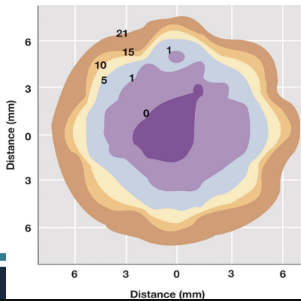
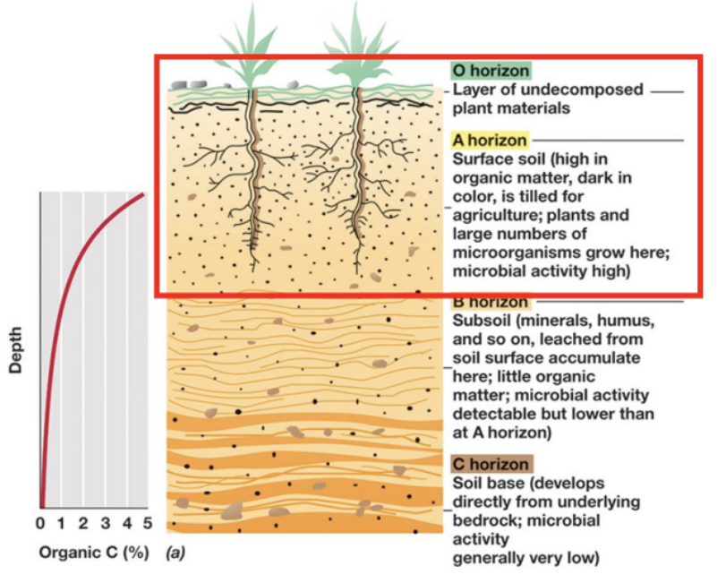
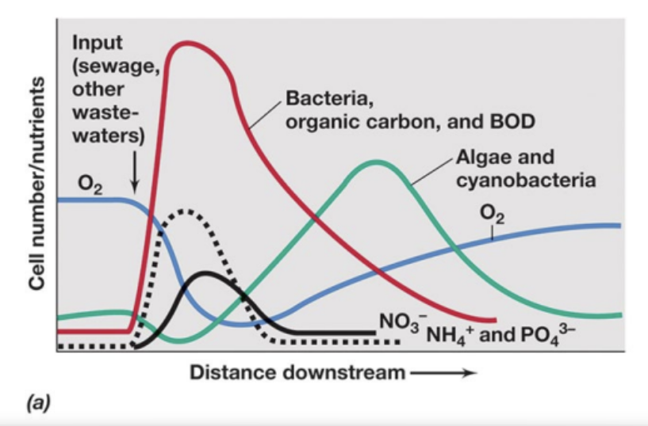

Module 5 · Lesson 1 — Introduction to Microbial Ecology
Built from the M5L1 review doc + lecture deck · 9 of Exam 3’s questions come from this lesson.
Ecological Terms & Diversity
M5L1 Q1What is the difference between habitat, community, ecosystem, guild, and population — and how do they rank in order of diversity?
Answer
Most → least diverse:Ecosystem > Habitat > Community > Guild > Population.
What each means
Ecosystem — all organisms plus the abiotic environment.
Habitat — the part of an ecosystem where a community lives.
Community — populations living together.
Guild — the metabolically related subset of a community.
Population — one species, same place and time.
Explanation
ConceptPicture nested scales: an ecosystem is everything (organisms and the nonliving environment), and you zoom in step by step until a population is a single species in one place. The middle tiers are where people slip — a community is all the populations together, while a guild narrows that to only the metabolically related ones, organisms running the same kind of chemistry.
On the examA question might scramble the five terms to rank, or hand you a one-line definition to match. Anchor the two ends first — ecosystem = everything, population = one species — and the confusable middle falls into place.
M5L1 Q2Contrast species richness and species abundance — how would you explain each with an example, and what does each tell you about an environment?
Answer
Species richness = how many different species (a count).
Species abundance = the proportion / evenness of each.
Example: a pond with 10 species where one alga is 90% of the cells = high richness, low / uneven abundance.
Explanation
ConceptThe two travel together but measure different things: richness is a headcount, abundance is how evenly that headcount is spread. A place can be rich (many species) yet wildly uneven (one species dominating), so you can’t read one from the other — both are shaped by the nutrients available and the conditions.
On the examA question might give you a species count plus a lopsided proportion and ask what kind of environment that implies. A stable, resource-varied habitat tends to support both high richness and more even abundance, so the numbers also hint at how favorable conditions are.
M5L1 Q3What is a niche, and what distinguishes a prime/realized niche from a fundamental niche?
Answer
Fundamental niche = everywhere it could survive (full tolerance range).
Realized / prime niche = where it actually thrives once competition applies.
Doesn’t mean it can’t live elsewhere — it can still survive anywhere in its fundamental niche, just less successfully; this is simply where it does best.
A niche belongs to a guild — not the same as a microenvironment (one cell’s immediate surroundings).
Explanation The distinction is potential vs. actual: the fundamental niche is the whole envelope an organism could tolerate, while the realized niche is the slice it actually wins once competitors and real conditions narrow things down. A question might describe an organism living across a broad range but dominating in one narrow band, then ask which term names that optimum — that’s the realized (prime) niche.
The Microbial Environment
M5L1 Q4What is a microenvironment? Using a soil particle as an example, what types of microbes live in the different microenvironments?
Answer
A microenvironment is the immediate, fast-changing surroundings of a single cell.
On one soil particle, an O2 gradient over a few millimeters splits the habitat:
aerobes — oxygenated surface
obligate anaerobes — anoxic core (after surface microbes use up the O2)

O₂ (%) across one soil particle — surface microbes consume the O₂, so the core turns anoxic.
Explanation The soil aggregate is the classic proof that “the environment” is never uniform — a gradient across a few millimeters creates totally different niches on one grain. A question might ask where on a particle you’d find the anaerobes: the anoxic core, after the surface microbes have used up the oxygen. Keep this distinct from a niche, which is a guild’s shared habitat rather than one cell’s surroundings.
Terrestrial Environments
M5L1 Q5What components make up soil, what are its four layers, and which layer is the most species-abundant?
Answer
Soil is mostly pore space, and life is concentrated at the top.
Composition
Air + water ~50% (the largest component)
Inorganic / mineral matter ~40%
Organic matter ~5%, organisms ~5%
Layers — the O / A / B / C horizons
O horizon — surface layer of undecomposed plant litter.
A horizon — topsoil; dark, organic-rich, highest microbial activity.
B horizon — subsoil; leached minerals/humus accumulate, little organic matter, lower activity.
C horizon — soil base developed from bedrock; microbial activity very low.
The soil surface (O + A horizons) holds the most organic matter and microbial life — the most species-abundant layer; activity falls with depth.

Soil horizons O–C. Organic matter and microbial life are highest at the surface (O + A) and fall with depth.
Explanation
ConceptThe counterintuitive part is that air + water (~50%) just edges out mineral matter (~40%) — soil is more empty space than solid. And the biology is top-heavy: organic matter and microbes concentrate at the surface and thin out with depth.
On the examYou won’t be asked to memorize the exact percentages — focus on which component is largest (air + water) and which layer is most species-abundant: the surface, i.e. the O and A horizons. Know the four horizons in order (O / A / B / C) and that microbial activity falls with depth.
M5L1 Q6What is the benefit of having smaller cells in subsurface environments?
Answer
They’re extremely small — a high surface-area-to-volume ratio that maximizes nutrient uptake in a nutrient-poor (oligotrophic) setting.
Explanation This is the Module 1 “why are cells small” principle resurfacing in an ecology context: more membrane per unit volume means more efficient scavenging when nutrients are scarce. The point to land on is exchange efficiency — a distractor might point to storing nutrients or dividing faster, but neither is the reason.
Aquatic & Marine Environments
M5L1 Q7What impact does water depth have on microbial species richness and abundance, and what are benthic species (where would you find them)?
Answer
Deeper water = less light, less O2, fewer nutrients → fewer, more specialized organisms.
Benthic — attached to the bottom or sides.
Planktonic (phytoplankton) — freely suspended.
Explanation Tie the depth trend to its cause: as light, oxygen, and nutrients drop off, communities thin out and specialize. The benthic-vs-planktonic split is the contrast to know — a question might describe where an organism lives (“attached to the sides” vs. “freely suspended”) and ask which category it belongs to.
M5L1 Q8What are the layers associated with temperate lakes, and can you identify them?
Answer
Epilimnion — warm, oxygenated surface.
Thermocline — the sharp temperature transition.
Hypolimnion — cold, dense, low-oxygen bottom.
Each layer has its own temperature, O2, and chemistry — its own microenvironments, which is why lake diversity is high.
ConceptThe Greek roots make it painless: epi- = upon (the top), hypo- = under (the bottom), and the thermocline is the temperature break sitting between them.
On the examThe exam might frame this as an identification item — give you a description (“warm surface,” “cold dense bottom,” “the transitional middle”) and ask you to name the layer.
M5L1 Q9What is biochemical oxygen demand (BOD), what alters it, and how does eutrophication impact BOD?
Answer
Eutrophication: extra nutrients → algal/plant bloom → die-off → microbes decompose it → O2 consumed → BOD rises, dissolved O2 falls, water trends anoxic.
BOD (biochemical oxygen demand) is the oxygen microbes need to break down organic matter — high BOD signals water headed toward oxygen depletion.

Oxygen sag below an organic-waste input: bacteria & BOD spike → dissolved O2 drops → released nutrients fuel an algal/cyanobacterial bloom → O2 recovers.
Explanation The causal chain is the answer, so trace it in order rather than memorizing an endpoint. A question might give a scenario — runoff, an algal bloom, a sewage input — and ask what happens to BOD and oxygen. The direction is the point: eutrophication increases BOD, and high-BOD water is on its way to anoxia.
M5L1 Q10What types of microbes thrive in marine waters, and which are most important for photosynthetic production?
Answer
Prochlorococcus ≈ 50% of marine photosynthetic production — the dominant marine phototroph.
Don’t confuse with
Trichodesmium — nitrogen fixation.
Ostreococcus — a eukaryote.
Pelagibacter — a heterotroph, not a phototroph.
Explanation If a question says “photosynthetic production,” the answer is Prochlorococcus. The trap is Pelagibacter — it’s the most abundant heterotroph out there, so it’s a tempting pick, but a heterotroph can’t be the photosynthesis answer.
M5L1 Q11What is the pelagic zone, what organisms tell you that's where you are, and what is most abundant there?
Answer
Most abundant heterotroph in open ocean = Pelagibacter (oligotroph, proteorhodopsin).
Most abundant microorganism overall = viruses (≈ 108/mL).
Spotting Pelagibacter tells you you’re in open pelagic water.
Explanation This one rewards reading the wording, because there are two “most abundant” answers. “Most abundant heterotroph” → Pelagibacter; “most abundant microorganism overall” → viruses. If it asks what organism marks open pelagic water, that’s Pelagibacter; if it asks what’s simply most numerous, that’s viruses.
M5L1 Q12What is the typical condition of the deep sea, and what causes variations from this?
“No light” is why deep-sea life is chemotrophic rather than phototrophic.
Explanation Hold the default and the exception together. A question might ask how heat-loving thermophiles can possibly live in a freezing deep ocean — the answer is hydrothermal vents, which pump out heat and reduced chemicals that fuel chemolithotrophic communities right on the seafloor.
Reinforcement quiz
M5L1 — reinforcement quiz
Exam-style multiple choice — to be built when this lesson's content is filled in.
—
Module 5 · Lesson 2 — Nutrient Cycles
Built from the M5L2 review doc + lecture deck · 8 of Exam 3’s questions come from this lesson.
The Carbon Cycle
M5L2 Q1What is the largest carbon reservoir?
Answer
Sediments and rocks — the largest carbon reservoir.
The atmosphere is the most rapidly transferred reservoir, not the largest; oceans are an active exchange pool, not the biggest sink.
Explanation The trap is “largest” vs. “fastest-cycling.” If a question asks for the biggest store of carbon, the answer is sediments and rocks — not the atmosphere or the oceans, which move carbon quickly but hold comparatively little of it.
M5L2 Q2What have humans done to disrupt the carbon cycle, and what parts of the cycle create harmful gases?
Answer
Humans raised atmospheric CO2 (~40% since the Industrial Revolution); the gas-making step of the cycle is decomposition.
Effects
Radiative forcing — CO2 traps long-wave heat.
Acidification chain — more CO2 → lower pH → reefs die → CaCO3 released.
Gas-making step
Decomposition releases both CO2 and CH4 and is the largest CO2 source; photosynthesis is the counterweight.
Explanation
ConceptTwo ideas anchor this block: radiative forcing, the term for CO2 trapping long-wave heat, and the acidification cascade that links rising CO2 to dissolving reefs. They’re the two faces of the same extra carbon — one warms the air, the other sours the water.
On the examIf asked which step of the cycle makes the greenhouse gases, the answer is decomposition (both CO2 and CH4) — not photosynthesis, which is the counterweight that pulls carbon back out.
M5L2 Q3What is the largest methane reservoir?
Answer
Methane hydrates — the largest methane reservoir (form under high methane, high pressure, low temperature).
Warming-Arctic risk: thawing permafrost can release the trapped methane. Keep methanogens (producers) separate from hydrates (storage).
Explanation The three conditions — high methane, high pressure, low temperature — are the ones to remember, and they’re why hydrates stay locked in cold seafloor and permafrost. Keep methanogens (the microbes that produce methane, using CO2 as an electron acceptor) separate from hydrates, which are just the storage form.
Nitrogen & Sulfur Cycles
M5L2 Q4What process results in a loss of organic nitrogen in the biosphere, and what impact does overuse of nitrogenous fertilizer have (what is being generated)?
Answer
Loss of organic N = denitrification + anammox, both producing N2.
Fertilizer overuse → more denitrification → generates N2O.
Explanation Recognize the “two combined” phrasing — denitrification and anammox both end in N2, which is how nitrogen leaves the biosphere. For the fertilizer half, the chain runs more fixed nitrogen → more denitrification → more N2O. [Flag: the deck is thin here — it says fertilizer overuse changes the iron and carbon cycles and that the effects are largely unknown; the specific “generates N2O” link is the standard denitrification mechanism, worth confirming against the lecture video.]
M5L2 Q5What is biologically available nitrogen, and how is it produced?
Answer
Biologically available nitrogen = NH3 (ammonia), made by nitrogen fixation (N2 → NH3).
N2 is everywhere but inert; fixation is what makes it usable.
Explanation The contrast is reservoir vs. usable — the atmosphere is full of N2, but only fixation converts it into the ammonia life can actually take up. Don’t confuse fixation with nitrification (NH3 → NO2- → NO3-) or denitrification (the loss pathway); the arrow to hold is N2 → NH3.
M5L2 Q6What is a typical entry point of the sulfur cycle, what organisms oxidize sulfur, and what form of sulfur do they oxidize?
Answer
Entry point:SO2 from fossil fuels.
Oxidizers:chemolithotrophs.
Form oxidized: reduced sulfur (H2S, S0) → sulfate (SO42-).
Explanation The mnemonic is that chemolithotrophs eat the reduced end of sulfur and push it toward the oxidized end (sulfate). A distractor might flip the direction — reducing sulfate back to sulfide is the opposite reaction, run anaerobically by a different group.
Other Nutrient Cycles
M5L2 Q7What is often cycled with iron?
Answer
Manganese — cycled in parallel with iron (Mn 4+/2+ mirroring Fe 3+/2+).
Named iron oxidizers: Acidithiobacillus and Leptospirillum ferrooxidans.
Explanation If a question says something is “cycled with iron,” the answer is manganese — both swing between an oxidized and a reduced state. One detail worth holding: Fe3+ reduction happens outside the cell, because the iron mineral is insoluble and can’t be brought in.
M5L2 Q8Where would you find calcium in marine microbes?
Answer
In the exoskeletons / shells marine phototrophs build — calcium carbonate (CaCO3).
Explanation Short and specific — calcium lives in the shells and exoskeletons. The high-value connection is back to the carbon cycle: acidifying oceans dissolve those CaCO3 structures, which is a big part of why reefs are endangered.
M5L2 Q9What is the concern with mercury, and what is a benefit of microbes here?
Benefit: other bacteria detoxify mercury using plasmid-encoded enzymes.
Explanation Microbes are double-edged here — some create the toxin, others remove it. If a question asks for the microbial “benefit” in the mercury cycle, the answer is that detoxification, not the methylation that causes the problem.
M5L2 Q10What is bioaccumulation, and how does it differ from biomagnification?
Answer
Bioaccumulation = buildup within one organism, over time.
Biomagnification = increase across trophic levels, up the food chain.
A top predator (e.g., tuna) vs. bottom organisms (plankton) points at biomagnification.
Explanation Classic distinguish-the-pair: one builds up vertically within a single organism, the other climbs the food chain. The tell is whether the scenario tracks one organism over time (bioaccumulation) or compares levels of a food web (biomagnification).
Reinforcement quiz
M5L2 — reinforcement quiz
Exam-style multiple choice — to be built when this lesson's content is filled in.
—
Module 5 · Lesson 3 — Microbes & the Built Environment
Built from the M5L3 review doc + lecture deck · 11 of Exam 3’s questions come from this lesson.
Microbial Leaching & Mining
M5L3 Q1What is microbial leaching, and what is the general process?
Answer
Microbial leaching = microbes oxidize metal sulfides in ore into soluble sulfates, freeing the metal.
Process
low-grade ore → leach dump
dilute sulfuric acid added
metal-enriched liquid drains off
Especially copper (~25% of all copper ore); also uranium and gold.
Explanation
ConceptThe microbes turn insoluble metal sulfides into soluble sulfates, so the metal washes out in solution — the same oxidation chemistry that reappears, unwanted, as acid mine drainage.
On the examWorth holding onto: the ~25% copper figure and the three-step process. Keep leaching (mobilizing a metal into solution) opposite to the uranium clean-up coming up, which locks a metal down.
M5L3 Q2What causes acid mine drainage, and what type of reaction is happening?
Answer
Acid mine drainage: bacterial oxidation of metal sulfides → acidic, metal-laden runoff toxic to aquatic life. Reaction = oxidation.
Same chemistry as leaching, just unwanted — mine waters run off into natural waters.
Explanation Leaching is the deliberate version; acid mine drainage is the pollution version of the exact same oxidation. If a question asks “what type of reaction,” the answer is oxidation — and the harm comes from the acid plus dissolved metals reaching natural water.
M5L3 Q3What happens when U6+ is converted to U4+, and what types of microbes are able to do this?
Answer
Reducing soluble U6+ → insoluble U4+ immobilizes it (contained as a solid, not removed).
Done by uranium / metal-reducing bacteria (a reduction reaction).
Explanation The whole move is the solubility flip: U6+ is soluble and mobile, U4+ is not, so reducing it traps the uranium where it sits. Two traps to watch — the reaction is reduction (opposite of leaching’s oxidation), and the uranium is contained, not eliminated. A question might ask what happens to its mobility (it drops) or which microbes do it.
Bioremediation
M5L3 Q4What is one way to improve oil spill cleanup using microbes?
Organic pollutants can be fully degraded to CO2; the degraders are usually nutrient-limited (the Deepwater Horizon story).
Explanation The improvement answer is supplementing inorganic nutrients — the hydrocarbon degraders are already present but nutrient-starved, so adding nitrogen and phosphorus lets them work faster. Deepwater Horizon is the example to anchor it to.
M5L3 Q5What causes breakdown of gasoline within storage tanks, and what would be a good way to avoid this?
Answer
Cause:sulfate-reducing bacteria consume hydrocarbons when sulfate is present.
Avoid it:limit or remove the sulfate (their electron acceptor).
Explanation Sulfate-reducing bacteria need sulfate as their electron acceptor, so the fix follows straight from the cause — take the sulfate away and they can’t grow. A distractor might blame aerobes or “just add a biocide,” but the deck ties both the problem and the fix to sulfate.
M5L3 Q6What are xenobiotic compounds, and why are microbes unable to break them down?
Answer
Xenobiotics = synthetic chemicals (PCBs, pesticides, dyes, solvents); microbes lack the enzymes to break down these novel structures.
Some go only by cometabolism (degraded alongside another molecule); plastics are essentially recalcitrant.
Explanation The “why” is the heart of the question: evolution never produced enzymes for compounds that didn’t exist until we synthesized them. Cometabolism is the workaround for some — a microbe breaks the xenobiotic down only while it’s feeding on something else.
Wastewater Treatment
M5L3 Q7What is the goal of wastewater treatment, and what is the general treatment process?
Answer
Treat sewage until it no longer fuels microbial growth, then disinfect.
Goal
Reduce organic + inorganic material below the level that supports microbial growth (measured as BOD reduction) and remove toxics.
Explanation The goal is framed in BOD terms — a direct callback to Lesson 2, where BOD measured the oxygen microbes demand. Picture the process as a relay: physical separation first, then the biological heavy lifting, then optional polishing, then disinfection. The next block breaks down what each stage actually does.
M5L3 Q8What are primary, secondary, and tertiary treatments (including anaerobic vs. aerobic processes and what the end products are used for)? Can you classify examples of each?
Explanation This is a classify-the-example block: match each named process to its tier and to aerobic vs. anaerobic. Activated sludge and trickling filters are the aerobic secondary options; sludge digesters and bioreactors are the anaerobic ones. [Flag: the deck doesn’t spell out “what the end products are used for” beyond effluent release; in practice anaerobic digestion yields biogas/methane (energy) and stabilized sludge (fertilizer) — worth confirming against the lecture video.]
Drinking Water & the Home
M5L3 Q9What are some current concerns for water treatment, and why are they such an issue?
Answer
Emerging pollutants existing treatment can’t remove: pharmaceuticals, personal care products, household products, sunscreens.
They slip through because legacy plants were built for classic organic / inorganic waste — so they end up in the effluent.
Explanation Legacy plants were built to handle classic organic and inorganic waste, not these novel micro-pollutants — so they slip straight through. This pairs naturally with the xenobiotics block: new synthetic compounds outrun both the microbes and the treatment design.
M5L3 Q10What are some concerns with transporting drinking water, what microbes are the primary issues, and how are they able to survive?
Answer
Pipes cause taste / odor and select for opportunistic / resistant pathogens.
They survive the low-nutrient, high-chlorine water by sheltering in:
biofilms on pipe walls
grazing protists
Growth in a distribution system can never be fully eliminated.
Explanation The named survivors are opportunistic pathogens, with grazing protists in the mix. The “how do they survive” answer is shelter — biofilms coating the pipe walls and the insides of protists protect them even against chlorine and near-zero nutrients. The headline fact: you can’t sterilize a distribution system.
M5L3 Q11What is the difference between microbial diversity inside vs. outside, and what impact does a shared environment/home (including pets) have on the microbiome?
Answer
Indoor microbiomes = less diverse, human-associated; outdoor = more diverse, environmental.
A shared home → shared microbiota (predicts the family, shifts within days); pets raise diversity.
Reduced overall exposure indoors is linked to allergies — pets, with extra diversity, are associated with fewer.
Explanation The strongest deck-supported hooks are that a home’s microbiota predicts the specific family and changes within days of occupancy, and that reduced overall exposure indoors is tied to allergies. [Flag: the “indoor less diverse than outdoor” framing and the pets points are standard built-environment microbiology but only lightly stated in the deck — confirm against the lecture video.]
M5L3 Q12What are some ways microbes can corrode your home?
Answer
Microbially influenced corrosion (MIC) of metals — pH shifts + corrosive biofilms (sulfate-reducing bacteria headline; also iron-cyclers, methanogens).
Biodeterioration of stone / concrete — e.g., crown corrosion of sewer lines by sulfate-reducing + sulfide-oxidizing bacteria.
Explanation Two terms to keep separate: microbially influenced corrosion attacks metals through pH shifts, corrosive metabolites, and biofilms, while biodeterioration breaks down stone and concrete — sometimes from microbes living inside the rock (endolithic). A question might give a scenario and ask which organisms are responsible.
Reinforcement quiz
M5L3 — reinforcement quiz
Exam-style multiple choice — to be built when this lesson's content is filled in.
—
Module 6 · Lesson 1 — Introduction to Symbiosis
Built from the M6L1 review doc + lecture deck · 3 of Exam 3’s questions come from this lesson.
Types of Symbiosis
M6L1 Q1What are the 3 types of symbiotic relationships discussed, what are examples of each, and can you identify each from an example or description?
Answer
Symbiosis = a close, long-term relationship between organisms. Tell the three types apart by who benefits and who is harmed: mutualism (+/+), commensalism (+/0), parasitism (+/–).
The deck adds that mutualism is an obligate interaction and that most mutualists coevolved over millions of years — a detail that matters in Q4.
Explanation
ConceptAll three are symbioses — organisms living together long-term — so the only thing that separates them is the ledger of benefit and harm. Mutualism is two pluses, commensalism is a plus and a zero (one rides along without affecting the other), parasitism is a plus and a minus (one gains at the other’s expense). The lecture frames mutualism as the obligate end of that spectrum, where partners have coevolved to depend on each other.
On the examExpect an identify-from-description stem: read who gains and who is hurt, then label it. A distractor leans on the word “together” (all three live together — that alone never decides the type) or swaps commensalism (+/0) for mutualism (+/+). The lecture’s worked examples are all mutualisms, so know lichen, Chlorochromatium aggregatum, and methanotrophic consortia cold. [Flag: the M6L1 deck only gives examples for mutualism; concrete commensalism/parasitism examples (e.g., a harmless skin commensal; a bacteriophage or pathogen harming its host) are standard textbook material — confirm the instructor’s preferred examples against the lecture video.]
Microbial Associations
M6L1 Q2What is a lichen — what organisms make it up, and what does each bring to the relationship?
Answer
A lichen is a leafy or encrusting mutualism of a fungus + a photosynthetic partner (an alga or a cyanobacterium), found on rocks, tree trunks, roofs, and bare soil.
What each partner brings
Alga / cyanobacterium — is photosynthetic, so it produces the organic matter (food); when the partner is a cyanobacterium it often fixes nitrogen as well.
Fungus — provides structural support so the phototroph grows protected from erosion, and supplies dissolved inorganic nutrients (and water).
Lichens also harbor bacteria and archaea — so the “two-partner” picture is really a small community.
Explanation
ConceptThe trade is the whole point: the phototroph can make carbon from light but is fragile and exposed, while the fungus can’t fix its own carbon but is great at anchoring, retaining water, and scavenging minerals. Pair them and each covers the other’s weakness — food for shelter. That reciprocal, can’t-go-it-alone exchange is why lichen is the textbook example of mutualism.
On the examThe classic stem is “what does each organism contribute?” — map fungus → structure/protection/inorganic nutrients, phototroph → organic carbon (and nitrogen if it’s a cyanobacterium). A distractor flips them (fungus doing photosynthesis) or calls the partner only an “alga” when the deck specifies alga or cyanobacterium. [Flag: the deck lists the phototroph as “Alga (Cyanobacterium)” and notes it “often fixes nitrogen”; nitrogen fixation is specifically the cyanobacterial partner’s contribution, not a true eukaryotic alga’s.]
M6L1 Q3What is a Consortium aggregatum — what organisms make it up, and what does each provide?
Answer
Chlorochromatium aggregatum is a freshwater microbial mutualism — a consortium tight enough that it’s given its own genus-species name. It pairs green sulfur bacteria with a central flagellated rod-shaped bacterium.
What each partner provides
Green sulfur bacteria — the surrounding epibionts; obligate anaerobic phototrophs that do the photosynthesis (the carbon/energy side). They make up ~70% of biomass in stratified sulfidic lakes.
Central flagellated rod — a single central cell that makes intimate contact with the surrounding epibionts and, being flagellated, supplies motility for the whole consortium.
Explanation
ConceptThis is a freshwater consortium so integrated it behaves like one organism — hence a single binomial name. The non-motile green sulfur bacteria need to sit where there’s both light and sulfide; the central rod can’t photosynthesize but it can swim. So the epibionts ride the central cell, which positions the whole package in the optimal layer, and in return the phototrophs feed it. Light-harvesting traded for transport.
On the examKnow the architecture (phototrophic epibionts around one flagellated central cell) and the “70% of biomass in sulfidic lakes” figure. Match each role: phototroph/epibiont → green sulfur bacteria; motility/central cell → flagellated rod. [Flag: the deck states the components and their traits (epibionts = anaerobic phototrophs; central cell = flagellated) but doesn’t spell out the exchange in words; “epibionts feed the central cell, which swims the consortium toward light/sulfide” is the standard textbook reading of those facts — confirm against the lecture video.]
M6L1 Q4What type of relationship is a methanotrophic consortium (specifically DIET), and what makes it this instead of synergism?
Answer
It is mutualism — an obligate syntrophic partnership — not synergism. DIET (Direct Interspecies Electron Transfer) wires the two microbes together so tightly that neither can run the reaction alone, and obligate interdependence is what defines mutualism over the looser, optional synergism.
The partnership
Coupled activity of two anaerobic microbes: a methane oxidizer + a sulfate reducer.
Together they oxidize methane to CO2 in anoxic marine sediments — a reaction neither carries out alone.
The link is DIET: electrons pass directly from one cell to the other.
Explanation
ConceptThis is the syntrophy idea from earlier, now named: the methane oxidizer can only keep going if a partner immediately takes its electrons, and DIET hands them off cell-to-cell. Because each partner is energetically stuck without the other, the relationship is obligate — and the deck defines mutualism as exactly that, an obligate interaction where both benefit. Synergism, by contrast, is a cooperation both partners could do without if they had to. Obligate vs. optional is the dividing line.
On the examThe stem will likely ask you to choose mutualism vs. synergism and justify it. The justification is dependence: DIET makes the methane-to-CO2 reaction impossible for either microbe alone, so the partnership is required (obligate) → mutualism. A distractor calls it synergism by emphasizing “cooperation” while ignoring that it’s not optional. [Flag: the M6L1 deck defines mutualism as “obligate” and points back to the earlier syntrophy lecture, but does not define synergism here; the formal contrast (synergism = non-obligate / mutualism = obligate) is from that earlier lecture + textbook — confirm against the syntrophy material.]
Reinforcement quiz
M6L1 — reinforcement quiz
Exam-style multiple choice — to be built when this lesson's content is filled in.
—
Module 6 · Lesson 2 — Microbe–Plant Symbiosis
Built from the M6L2 review doc + lecture deck · 6 of Exam 3’s questions come from this lesson.
Rhizobia & Legumes
M6L2 Q1What are Rhizobia, what is their relationship with a legume, how do they prevent oxygen degradation, and what is the nodule formation process?
Answer
Rhizobia are Alpha- or Betaproteobacteria that fix nitrogen — living freely in soil or infecting legume roots to form nitrogen-fixing root nodules (a mutualism). They guard the reaction with leghemoglobin, which buffers free O2.
The relationship
Legumes = plants with seeds in pods (beans, clover, alfalfa, peas).
Infection makes nodules that fix N2 → more combined nitrogen in the soil → legumes thrive where other plants can’t.
Generally different rhizobia infect different legumes.
The oxygen problem & fix
Paradox: fixation needs O2 to make energy, but O2inactivates nitrogenase.
Leghemoglobin binds free O2 in the nodule — an oxygen buffer that shields nitrogenase while still feeding respiration.
Nodule formation
Rhizobia attach to root hairs → travel to the main root → ~one month later nodules form.
Regulated by nodABC genes / Nod factors (detailed in Q2).
Explanation
ConceptThe whole partnership exists to solve a chemistry conflict. Nitrogen fixation is energetically expensive, so the bacteria need to respire with O2 to power it — yet the nitrogenase enzyme is wrecked by that same O2. The legume’s answer is leghemoglobin: an O2-binding protein that keeps free oxygen vanishingly low (protecting the enzyme) while shuttling bound O2 to the bacteria for energy. In return for fixed nitrogen, the plant houses and feeds them.
On the examThe favorite trap is the oxygen paradox — a stem may claim nitrogenase “needs oxygen” (wrong: it’s inactivated by O2; the cell needs O2 for energy) and ask what resolves it: leghemoglobin as an O2 buffer. Also know rhizobia are Alpha-/Betaproteobacteria (not the nodule itself) and the formation sequence root hairs → main root → nodule.
M6L2 Q2What is the function of nodABC, and what happens if one of these is mutated?
Answer
The nodABC genes build the Nod factor — the chemical signal that tells the legume to start a nodule. Mutate any one and the Nod factor is incomplete, so no nodules form and nitrogen fixation never starts.
What each gene does
Gene
Role in building the Nod factor
nodC
builds the N-acetylglucosamine (chitin) oligosaccharide backbone
nodB
deacetylates the terminal sugar of that backbone
nodA
attaches the fatty acyl chain
Together they regulate nodule formation; the product is recognized by the plant to trigger root-hair curling and infection.
Explanation
ConceptThink of nodABC as an assembly line for one signaling molecule: nodC lays down the sugar chain, nodB trims one end, nodA caps it with a lipid tail. The finished lipochitooligosaccharide (the Nod factor) is the “password” the legume root reads before it will let the bacteria in and start building a nodule. Knock out any single step and the password is garbled — the plant never responds.
On the examExpect a mutant scenario: “a nodC mutant fails to…” → make a functional Nod factor → no root-hair curling, no infection, no nodules, no fixation. The key idea is that all three are required, so losing one breaks the whole signal. [Flag: the M6L2 deck states only that formation is “regulated by nodABC genes / Nod factors”; the per-gene enzymatic roles (nodC backbone, nodB deacetylase, nodA acyltransferase) are standard Brock textbook detail — confirm the depth your instructor expects against the lecture video.]
M6L2 Q3What are bacteroids, how are they different from traditional cells, and what does the plant provide?
Answer
Bacteroids are rhizobia that have changed shape inside the nodule into a dedicated nitrogen-fixing form, packaged in a symbiosome and dependent on the plant for fuel — the plant supplies pyruvate.
How they differ from a free-living cell
After infection rhizobia rapidly divide, then change shape into bacteroids.
Enclosed in a symbiosome within the nodule (not free in soil).
No longer self-sufficient — they depend on the plant for fuel.
What the plant provides
Pyruvate — the carbon/energy source that powers fixation (the plant also supplies the low-O2, leghemoglobin-buffered environment from Q1).
Explanation
ConceptA bacteroid is what a free-living rhizobium becomes once it commits to the nodule: it divides, reshapes, and gets wrapped in a plant-derived symbiosome membrane. That repackaging trades independence for a sheltered, fed niche — the plant hands over pyruvate as fuel, and the bacteroid hands back fixed nitrogen. It is the working form of the symbiosis, not a normal dividing cell.
On the examMatch the three differences (changed shape, housed in a symbiosome, fuel-dependent) and name the fuel: pyruvate. A distractor might say the plant supplies nitrogen (backwards — the bacteroid supplies that) or glucose (the deck specifies pyruvate). [Flag: the deck says rhizobia “change shape → bacteroids,” form a symbiosome, and depend on the plant for pyruvate; the further textbook point that bacteroids are terminally differentiated / non-reproductive is not stated in this deck — confirm against the lecture video before relying on it.]
Mycorrhizae
M6L2 Q4–Q5What are mycorrhizae — what does each organism provide, what is the benefit of the mycelium, what is ectomycorrhizae, and where would you expect to find these?
Answer
Mycorrhizae are a mutualism of plant roots + fungi: the fungus supplies inorganic nutrients from soil, the plant donates carbohydrates. The fungal mycelium adds huge surface area for nutrient uptake.
What each partner provides
Fungus → transfers inorganic nutrients from soil to the plant.
outside the root — a sheath around it, only slight penetration
primarily forest trees of boreal & temperate forests
Endomycorrhizae (arbuscular)
deeply embedded within root tissue
>80% of terrestrial plants; can’t be pure-cultured
Explanation
ConceptThe trade is nutrients-for-sugar: the fungus is a superb miner of soil minerals (especially because its thread-like mycelium reaches far more soil than roots alone), and it passes those inorganic nutrients to the plant in exchange for photosynthetic carbohydrate. The ecto/endo split is just geography on the root — “ecto” wraps the outside in a sheath, “endo” grows inside the cells (arbuscular).
On the examKeep the direction straight (fungus → inorganic nutrients; plant → carbohydrates) — a distractor flips them. The mycelium answer is “surface area.” For identify-the-type stems, anchor on location: sheath around the root in boreal/temperate forest trees = ectomycorrhizae; embedded within and covering >80% of plants = endo/arbuscular. [Flag: the deck lists “inorganic nutrients” without naming phosphorus specifically; if you cite P as the headline nutrient, that’s textbook detail — confirm against the lecture video.]
Plant Pathogens
M6L2 Q6What is crown gall disease, and what is the causative agent?
Answer
Crown gall disease is a plant-tumor disease — a parasitic microbe–plant relationship — caused by Agrobacterium tumefaciens, which carries a large tumor-inducing (Ti) plasmid.
How it works
Enters through a wound site and synthesizes cellulose microfibrils (to anchor to the plant).
Transfers a portion of the Ti plasmid into the plant cells, delivered via vir-encoded proteins.
The transferred DNA promotes uncontrolled plant cell growth → the gall (tumor).
Explanation
ConceptThis is the parasitic counterpoint to all the mutualisms in the lesson: Agrobacterium tumefaciens doesn’t trade — it hijacks. It slips in at a wound, attaches via cellulose microfibrils, and uses vir-encoded proteins to inject part of its Ti plasmid into the plant’s own genome, reprogramming the cell to divide uncontrollably and feed the bacterium. A genetic takeover, which is exactly why the Ti plasmid became the classic plant genetic-engineering tool.
On the examLock the pairing: crown gall → Agrobacterium tumefaciens → Ti plasmid. Likely details: entry through a wound, transfer “via vir-encoded protein,” and that it’s parasitism (one benefits, the plant is harmed), contrasting with the lesson’s mutualisms. A distractor might offer Rhizobium (mutualist, not pathogen) or call it commensalism.
Reinforcement quiz
M6L2 — reinforcement quiz
Exam-style multiple choice — to be built when this lesson's content is filled in.
—
Module 6 · Lesson 3 — Microbe–Animal Symbiosis
Built from the M6L3 review doc + lecture deck · 6 of Exam 3’s questions come from this lesson.
Insect Symbionts
M6L3 Q1What is the difference between horizontal and vertical transmission in insect symbionts, and can you identify each from examples or descriptions?
Answer
Vertical (heritable) transmission = the symbiont is passed from parent to offspring (e.g., packaged in the egg); horizontal transmission = the host acquires it fresh from the environment each generation.
Heritable (vertical) insect symbionts are obligateprimary symbionts — they lack a free-living replicative stage.
Explanation
ConceptThe split is simply inherited vs. picked up. When a symbiont rides along inside the egg, parent and microbe are locked together generation after generation — that tight coupling is why heritable insect symbionts become obligate primary symbionts with no free-living stage. A horizontally transmitted partner is re-recruited from the environment each generation, so it keeps the ability to live outside the host.
On the examThis is an identify-from-description item. “Acquired from seawater each generation” → horizontal (the squid–Aliivibrio case). “Found in the egg / passed from the mother” → vertical (coral’s dinoflagellates). A distractor swaps the two, or calls an environmentally acquired microbe “inherited.”
M6L3 Q2–Q3What is the difference between a primary and a secondary symbiont, which is required for host reproduction, and what benefit could Wolbachia provide?
Answer
Primary symbionts are required for the host to reproduce (obligate, housed in bacteriocytes); secondary symbionts are not required but add benefits (nutrition, protection). Wolbachia manipulates host reproduction to favor infected females.
Primary vs. secondary
Feature
Primary
Secondary
Required to reproduce?
Yes (obligate)
No (facultative)
Location
restricted to the bacteriome (bacteriocytes)
not always present; other cells or extracellular
Role
host fitness; extreme gene reduction
provide a benefit — nutrition, protection, etc.
Primary symbiont genomes
Extreme gene reduction — ~160–800 kbp vs. ~2–8 Mbp in free-living bacteria; they keep only genes needed for host fitness (lose catabolic genes).
Wolbachia
A heritable reproductive manipulator: sperm of Wolbachia-infected males sterilize uninfected females, so infected females out-reproduce uninfected ones — spreading the symbiont (compare the deck’s Rickettsia case: infected whiteflies make 2× the offspring).
[Flag: the deck states the “infected-male sperm sterilize uninfected females” effect (cytoplasmic incompatibility) and the Rickettsia 2×-offspring parallel; broader Wolbachia benefits — antiviral protection and use in suppressing dengue-transmitting mosquitoes — are standard textbook (no textbook available to cross-check) — confirm against the lecture video.]
Explanation
ConceptPrimary = the can’t-live-without-it partner: ancient, obligate, tucked inside bacteriocytes, and so dependent that its genome has eroded to a fraction of a free-living one. Secondary = the optional roommate: helpful (defense, extra nutrition) but the host reproduces fine without it. Wolbachia is the famous reproductive puppeteer — instead of feeding the host it rigs reproduction so infected females are favored, which is exactly how a maternally inherited symbiont spreads through a population.
On the exam“Which is required for reproduction?” → the primary symbiont; the bacteriocyte / bacteriome cue points to primary. For Wolbachia, the deck’s hook is that infected males’ sperm sterilize uninfected females. A distractor labels the optional, protective microbe “primary,” or says secondary symbionts are always present.
M6L3 Q4What is an example of a defensive symbiont, and how would you describe the relationship?
Answer
A defensive symbiont protects its host with toxic / antimicrobial chemicals. Deck example: the Paederus beetle + a Pseudomonas symbiont that makes pederin — a defensive mutualism.
The relationship
Pseudomonas synthesizes pederin, a cytotoxic chemical that inhibits mitosis in eukaryotes.
Pederin accumulates in the beetle’s hemolymph → deposited in the eggs → deters arthropod predation of the eggs.
The trade: the beetle houses/carries the bacterium; the bacterium supplies chemical defense.
Explanation
ConceptDefensive symbiosis is chemical bodyguarding: the host can’t make a good toxin, so it outsources the chemistry to a microbe. In the Paederus beetle, Pseudomonas makes pederin and the beetle routes it into its eggs, so predators that would eat the eggs are deterred. Both sides win — room and board for a weapon — which makes it a defensive mutualism.
On the examRecognize the pattern (a microbe-made toxin protecting the host or its offspring) and the deck’s specific case: Paederus beetle / Pseudomonas / pederin / inhibits mitosis / protects eggs. The classic distractor credits the toxin to the beetle itself rather than its bacterial symbiont.
Marine Symbioses
M6L3 Q5What is the relationship between Aliivibrio fischeri and the bobtail squid, and what does each provide?
Answer
A mutualism: the Hawaiian bobtail squid houses Aliivibrio fischeri in a light organ. Squid → nutrients; bacteria → camouflage by bioluminescence (light like moonlight).
What each provides
Squid → nutrients (and a protected home, the light organ).
A. fischeri → camouflage: emits light that resembles moonlight penetrating the water.
Key facts
Bacteria colonize the light organ just after the squid hatches.
Transmission is horizontal (from seawater — ties to Q1).
A model system for animal–bacteria symbiosis: both can be grown in the lab; a single microsymbiont.
[Flag: the camouflage mechanism (counter-illumination — matching downwelling light to erase the squid’s silhouette) and quorum-sensing control of the light are standard textbook (no textbook available to cross-check); the deck states only “emit light that resembles moonlight penetrating the water” — confirm against the lecture video.]
Explanation
ConceptThe point of the glow is camouflage from below: a predator looking up sees faint moonlight, and a normal squid would cast a dark silhouette against it. By emitting light that matches the moonlight, A. fischeri erases that silhouette. The squid pays in nutrients and a safe light organ; the bacteria pay in light. It’s the textbook model for how an animal recruits one specific bacterial partner.
On the examMatch the exchange (squid → nutrients/home; bacteria → light/camouflage) and remember transmission is horizontal — acquired from seawater, colonizing the light organ after hatching (a favorite tie-in to Q1). A distractor flips who provides the light, or calls the transmission vertical.
M6L3 Q6What is an example of a phototrophic symbiotic relationship (what does each organism provide), and what causes coral bleaching?
Answer
A phototrophic mutualism: stony coral + Symbiodinium (a dinoflagellate). The dinoflagellate → organic nutrients via photosynthesis; the coral → improved light-gathering. Coral bleaching = loss of the symbionts (and color) under high temperature / high light.
What each provides
Symbiodinium (dinoflagellate) → performs photosynthesis and provides organic nutrients (stored in symbiosomes).
Coral → improves the dinoflagellate’s light-gathering capacity (the skeleton is an efficient light-gathering structure).
Coral bleaching
High temperatures and high light impair the dinoflagellate’s photosynthesis.
Lysis / loss of the symbiont → loss of color = bleaching.
[Flag: “zooxanthellae” (the common name for these symbiotic dinoflagellates) and the detail that bleaching exposes the white CaCO3 skeleton / starves the coral are standard textbook (no textbook available to cross-check); the deck states “Symbiodinium,” “lysis of symbiont → loss of color,” and “high temps and high light impair… photosynthesis” — confirm against the lecture video.]
Explanation
ConceptThe coral’s stony skeleton is essentially a light trap: it concentrates light for its dinoflagellate tenants, which photosynthesize and hand organic carbon back to the coral. The whole partnership runs on light — so anything that wrecks the algae’s photosynthesis, chiefly heat and intense light, breaks the deal. The coral loses its colored dinoflagellates and turns pale: that’s bleaching.
On the exam“Loss of the symbiont / color under heat stress is called ___” → coral bleaching. Know the partners (stony coral + Symbiodinium dinoflagellate) and the exchange (algae → organic nutrients; coral → light-gathering). A distractor blames “cold water” or calls bleaching an infection rather than loss of the photosynthetic symbiont.
Herbivore Digestion
M6L3 Q7What types of mammals consume high levels of plants, what organ assists with digestion, what environment is within it, what microbes are found there, and what nutrition do these microbes provide?
Answer
Herbivores — especially ruminants (cows, sheep, goats) — digest plants with help from the rumen, an anaerobic fermentation chamber packed with microbes that break down cellulose the mammal can’t digest itself.
The setup
Mammals: herbivores; ruminants are foregut fermenters (chamber before the small intestine). Hindgut fermenters use the cecum/large intestine (e.g., humans).
Organ: the rumen — where cellulose and other plant polysaccharides are digested.
Nutrition: fatty acids = the host’s main energy source; microbes also make amino acids and vitamins, and serve as a protein source when the host digests them.
[Flag: the deck says “anaerobic bacteria dominate” and lists methane production (implying methanogenic archaea); further textbook specifics — rumen protozoa and anaerobic fungi, the named volatile fatty acids (acetate/propionate/butyrate), and the ~39°C/near-neutral pH — are standard textbook (no textbook available to cross-check) — confirm against the lecture video.]
Explanation
ConceptMammals can’t make cellulases, so herbivores “rent” them from microbes. Ruminants evolved a foregut chamber — the rumen — kept anaerobic so fermentation can run: microbes hydrolyze cellulose to glucose and ferment it, and the fatty acids they release become the animal’s main energy source. The microbes are later digested for protein and supply vitamins, so the cow effectively farms its own food.
On the examChain the five parts: herbivore/ruminant → rumen → anaerobic → cellulolytic microbes → fatty acids (main energy) + microbial protein/vitamins. The classic distractor is that the cow’s own enzymes digest cellulose (they don’t — the microbes do), or that the rumen is aerobic.
Reinforcement quiz
M6L3 — reinforcement quiz
Exam-style multiple choice — to be built when this lesson's content is filled in.
—
Module 6 · Lesson 4 — The Human Microbiome
Built from the M6L4 review doc + lecture deck · 12 of Exam 3’s questions come from this lesson.
Microbiome Overview
M6L4 Q1What are some reasons to study the microbiome, and what benefit does the microbiome have against infection?
Answer
We study the microbiome to predict, target, and personalize care; its biggest defensive payoff is colonization resistance — resident microbes crowd out pathogens.
Why study it
Develop biomarkers to predict disease predisposition.
Design targeted therapies and personalized drug therapies / probiotics.
Benefit against infection
Resident microbes limit pathogens’ ability to colonize — the basis of probiotics and fecal transplants, which “exclude the disease-causing organism.”
[Flag: the deck states probiotics “limit the ability of pathogens to colonize” and fecal transplants “exclude the disease-causing organism”; the umbrella term colonization resistance is standard textbook (no textbook available to cross-check) — confirm against the lecture video.]
Explanation
ConceptThe microbiome is being mined for clinical signal: which microbes you carry may predict disease risk and how you’ll respond to a drug, opening the door to personalized therapy and probiotics. Defensively, a full house of commensals leaves no room or resources for invaders — they occupy the niches a pathogen would need, so an intact community is itself a barrier to infection.
On the examExpect “why study the microbiome” (biomarkers, targeted/personalized therapy) and the infection-defense angle (resident microbes block pathogen colonization). A distractor frames the benefit as the microbiome directly killing pathogens with antibiotics rather than competitively excluding them.
GI Tract
M6L4 Q2What does the human gut microbiome tend to look like, what benefits can they provide, and what organisms do you expect in the GI tract of a healthy individual?
Answer
The gut microbiome is dense (~1013 cells) and mostly Firmicutes + Bacteroidetes (with Proteobacteria); it ferments food, makes nutrients, and trains the immune system. Individuals fall into 3 enterotypes.
What it looks like
~1013 microbial cells; the colon is essentially an in vivo fermentation vessel.
98% of gut bacteria = Firmicutes, Bacteroidetes, Proteobacteria (mostly Firmicutes and/or Bacteroidetes).
3 enterotypes: enriched in Bacteroides (#1), Prevotella (#2), or Ruminococcus (#3).
Benefits
Vitamin production, steroid modification, amino acid biosynthesis; may regulate metabolism.
Develops/trains the immune system (which doesn’t develop properly without microbial stimulation).
ConceptPicture the colon as a fermenter packed with ~1013 cells, overwhelmingly Firmicutes and Bacteroidetes. They earn their keep by fermenting what we can’t digest, producing vitamins and other metabolites, and tutoring the immune system. Despite individual variation, people cluster into three enterotypes named for their dominant genus.
On the examKnow the two dominant phyla (Firmicutes, Bacteroidetes) and the three enterotype genera (Bacteroides, Prevotella, Ruminococcus). A “healthy GI organisms” stem wants those names; a benefits stem wants vitamins/metabolism/immune training. A distractor claims the acidic stomach is sterile — it isn’t (rich microbiome, incl. H. pylori).
M6L4 Q3What is the cause of peptic ulcers, and why is it able to survive in the stomach?
Answer
Peptic ulcers are caused by Helicobacter pylori overgrowth. It survives the stomach because it is acid-resistant and lives in the protective gastric mucosa.
The pathogen
H. pylori is acid-resistant; found in the gastric mucosa of ~50% of the population; overgrowth causes peptic ulcers.
How it survives ~pH 2
It shelters in the mucus layer (gastric mucosa), away from the most acidic lumen.
[Flag: the deck states H. pylori is “acid resistant” and lives in the gastric mucosa; the specific mechanism — urease converting urea → ammonia to neutralize local acid, plus a spiral shape and flagella to burrow into the mucus — is standard textbook (no textbook available to cross-check) — confirm against the lecture video.]
Explanation
ConceptMost microbes can’t colonize a pH-2 stomach, but H. pylori can — it tucks into the mucus layer lining the stomach (the gastric mucosa), where the pH is far gentler than the lumen, and it is intrinsically acid-resistant. Carriage is common (~half of people); disease comes when it overgrows and ulcerates the lining.
On the exam“A microbe causes peptic ulcers and survives stomach acid” → H. pylori. If the stem asks the mechanism, the textbook answer is urease (ammonia neutralizes acid) + spiral shape/flagella to reach the mucus — but the deck only commits to “acid-resistant, lives in the gastric mucosa,” so lead with that.
M6L4 Q4What is the relationship between microbes in the large intestine and propensity for obesity, and what did they see in mice and humans?
Answer
Large-intestine microbes may regulate metabolism and influence propensity for obesity. Mice showed the microbiota drives fat gain; humans only partly matched the mouse pattern.
In mice
Normal mice have ~40% more fat than germ-free mice on the same diet.
Germ-free mice given a normal microbiota gain weight.
Genetically obese mice have a different microbiota: more Firmicutes + more methanogenic Archaea.
In humans
Human studies could NOT confirm the Bacteroidetes–Firmicutes relationship found in mice.
But obese humans more often harbor Prevotella + methanogenic Archaea.
Outcome depends on diet as well as genetics.
Explanation
ConceptThe mouse data make a strong causal case: microbes change how much energy the host harvests, so colonizing germ-free mice makes them gain fat, and obese mice carry a shifted community (more Firmicutes, more methanogens). Humans are messier — the exact Firmicutes:Bacteroidetes ratio from mice didn’t replicate, though obese people do trend toward Prevotella and methanogens. The honest takeaway: diet + genetics both shape it.
On the examThe trap is overstating the human data — the Bacteroidetes–Firmicutes ratio was a mouse finding that humans did NOT confirm. Know the mouse evidence (40% more fat; germ-free gain weight on transplant; obese mice = more Firmicutes + methanogens) and the human nuance (Prevotella + methanogens; depends on diet + genetics).
M6L4 Q5What are some concerns with using a mouse model for GI microbiota studies?
Answer
Mice are convenient but anatomically different: they have a large cecum and do most fermentation in the cecum, whereas humans ferment in the large intestine.
Why translation is imperfect
Mice have larger cecums; most fermentation is completed there (vs the human large intestine).
Different gut anatomy/physiology means results don’t always carry over to humans.
Why mice are still used
Short life cycles, well-defined genetic lines, and they can be raised germ-free — good for antibiotic therapy, dietary control, and fecal-transplant studies.
Explanation
ConceptThe headline concern is the fermentation site: a mouse runs most of its fermentation in a big cecum, while humans do it in the colon, so a microbiota that behaves one way in a mouse gut may behave differently in ours. Mice are still valuable because they’re fast-breeding, genetically uniform, and can be made germ-free — ideal for controlled diet/antibiotic/transplant experiments — but their anatomy is the caveat.
On the examThe expected answer is the cecum difference (mice ferment in a large cecum; humans in the large intestine). A distractor lists a strength (germ-free, short life cycle) as if it were a “concern.” [Flag: additional textbook concerns — coprophagy and germ-free/gnotobiotic limitations — go beyond this deck; confirm against the lecture video.]
Other Body Sites
M6L4 Q6What are the factors that impact the composition of the skin microbiota?
Answer
Skin microbiota is set by the microenvironment type (dry / moist / sebaceous) plus environmental (weather) and host factors (age, hygiene, sex).
Factors
Skin microenvironment: dry, moist, or sebaceous — differing moisture and chemical composition.
Environmental factors — e.g., weather.
Host factors — age, personal hygiene, sex, etc.
Scale & typical genera
~1 million bacteria/cm2 (~1010 on an adult); each microenvironment has a unique community: Staphylococcus, Propionibacterium, Corynebacterium.
Explanation
ConceptSkin isn’t one habitat — a dry forearm, a moist armpit, and an oily forehead are different worlds, so the biggest driver of who lives where is the local microenvironment (moisture + chemistry). On top of that, external conditions (weather) and host traits (age, hygiene, sex) tune the community, which is why each site carries its own signature genera.
On the examList the three microenvironments (dry/moist/sebaceous) plus environmental and host factors. A “which factor shapes skin microbiota” stem accepts moisture/site, weather, age, hygiene, sex. Recognize the signature genera (Staphylococcus, Propionibacterium, Corynebacterium).
M6L4 Q7What causes dental plaque and periodontitis, and is this an increase or decrease in species diversity within the oral cavity?
Answer
Dental plaque is a biofilm of Streptococcus + other fermenting bacteria whose acid wears enamel (caries); the periodontitis shift is an increase in oral species diversity.
Cause
Plaque = a biofilm on teeth; Streptococcus + other fermenters produce acid that wears down enamel (dental caries).
Periodontal disease contributes to systemic conditions — cardiovascular disease, arthritis.
Diversity direction
[Flag: the review doc asks increase vs decrease, but the M6L4 deck doesn’t state a direction; standard textbook is that periodontitis is a dysbiotic increase in subgingival diversity (more anaerobes / gram-negatives) (no textbook available to cross-check) — confirm against the lecture video.]
Explanation
ConceptPlaque is the classic oral biofilm: Streptococcus and friends ferment sugars to acid, and that acid demineralizes enamel into caries; when the gum-line community shifts, periodontitis sets in and even feeds systemic disease. As for diversity, the typical teaching is that periodontitis is an increase — a dysbiotic bloom of additional anaerobic species in the pocket.
On the examPair plaque → biofilm of Streptococcus/fermenters → acid → enamel breakdown. For the diversity item the expected answer is “increase,” but since the deck doesn’t state it explicitly, confirm the direction your instructor used. A distractor calls plaque a single planktonic species rather than a biofilm.
M6L4 Q8What does the microbiota within the lower respiratory tract look like, and what types of microbes are able to reach the lungs?
Answer
In a healthy adult the lower respiratory tract is essentially sterile — no normal microbiota. Only very small particles (<10 µm) reach the lungs; pathogens that do cause pneumonia.
Upper vs lower
Upper RT: microbes thrive (enter from air), get trapped in mucus, then expelled in nasal secretions or swallowed and killed in the stomach.
Lower RT: naturally sterile; no normal microbiota in healthy adults.
What reaches the lungs
Only particles <10 µm; pathogenic microbes that reach the lungs cause pneumonia.
[Flag: the deck writes “<10mm” (almost certainly a typo for <10 µm) and calls the lower RT “naturally sterile”; modern sequencing instead describes a low-biomass community seeded from the upper airway (no textbook available to cross-check) — confirm against the lecture video.]
Explanation
ConceptThe airway is a filter. The upper tract is full of microbes, but mucus and the swallow-and-acid-kill route keep them from descending, so in health the lower tract stays essentially sterile. Only the smallest airborne particles slip past into the lungs, and when those carry pathogens you get pneumonia.
On the examLower RT in a healthy adult = sterile / no normal microbiota (the deck’s position); only <10 µm particles reach the lungs; pathogens there → pneumonia. A distractor describes a thriving normal lung flora (true by modern sequencing, but not the deck’s framing — go with the deck).
M6L4 Q9What is the common environment for a female urogenital tract, and what happens when antibiotics are taken?
Answer
The healthy vagina is weakly acidic and glycogen-rich, dominated by Lactobacillus acidophilus that ferments glucose to lactic acid. Antibiotics wipe out Lactobacillus → yeast overgrowth.
Common environment
Weakly acidic + significant glycogen; Lactobacillus acidophilus ferments glucose → lactic acid, keeping the pH low and protective.
With antibiotics
Antibiotics kill the protective Lactobacillus → yeast overgrowth.
(Separately, altered urethral pH lets pathogens like E. coli and Proteus mirabilis grow → UTIs.)
Explanation
ConceptThe vagina protects itself chemically: Lactobacillus eats glycogen-derived glucose and excretes lactic acid, holding the pH low enough to deter pathogens. Antibiotics are indiscriminate — they kill the Lactobacillus too, removing the acid barrier and letting yeast (which antibiotics don’t touch) bloom.
On the exam“Antibiotics deplete vaginal Lactobacillus, leading to ___” → yeast overgrowth. Know the protective chain: glycogen → Lactobacillus → lactic acid → low pH. A distractor credits the acidity to the host rather than to bacterial fermentation.
Virome & Clinical
M6L4 Q10What is a benefit to the human virome?
Answer
A healthy person is full of viruses, and a key benefit is that bacteriophages act as a first line of defense against pathogens.
The virome
Many resident viruses; some cause disease, some are mild, and some are essentially harmless (plant viruses, bacteriophages).
Bacteriophages = a first line of defense against bacterial pathogens.
[Flag: the deck names phages as a “first line of defense against pathogens”; the broader mechanism (phages regulate bacterial population balance and aid mucosal defense / gene transfer) is standard textbook (no textbook available to cross-check) — confirm against the lecture video.]
Explanation
ConceptNot all our viruses are enemies. Bacteriophages infect bacteria, so a resident phage population helps hold bacterial pathogens in check — a built-in antibacterial defense layered on top of the bacterial community itself.
On the exam“A benefit of the human virome” → bacteriophages defend against (bacterial) pathogens. A distractor implies all viruses are harmful; the point is that phages are beneficial members of the virome.
M6L4 Q11What is commonly seen in patients with IBD?
Answer
IBD shows lower gut microbiome diversity (dysbiosis) with chronic inflammation and loss of homeostasis.
Hallmarks
Lower gut microbiome diversity; chronic gut inflammation + disruption of homeostasis.
Increased risk with antibiotic use; correlates with a western diet; transmissible between family members.
Explanation
ConceptIBD is the textbook example of dysbiosis: the community loses diversity and stops keeping the gut in balance, so inflammation runs chronic. The links to antibiotics, western diet, and family transmission all point back to a disrupted microbial community as central, not incidental.
On the exam“What’s commonly seen in IBD?” → reduced / lower gut microbiome diversity (dysbiosis) with chronic inflammation. A distractor says IBD shows increased diversity — it’s the opposite.
M6L4 Q12What are some risks with antibiotic use in newborns?
Answer
Antibiotics in newborns decrease ALL gut microbes (target + non-target) during a critical window, raising the risk of IBD / dysbiosis disorders and C. difficile infection.
Risks
Oral antibiotics decrease all gut microbes — target and non-target alike.
Use in the first few months of life increases risk of IBD and other dysbiosis-related disorders.
Clostridium difficile infection (a spore-former, generally antibiotic-resistant) is associated with antibiotic use; fecal transplant is a newer therapy.
Explanation
ConceptAntibiotics can’t aim — they flatten the whole gut community, and doing that while an infant’s microbiome is still assembling derails its development, raising later dysbiosis risk (IBD and more). It also clears space for C. difficile, which shrugs off antibiotics as a resistant spore-former and overgrows.
On the examNewborn antibiotic risks → wipes out all gut microbes during a key developmental window → IBD/dysbiosis later + C. difficile overgrowth. A distractor says antibiotics only hit the target pathogen (they hit everything).
M6L4 Q13What are probiotics and prebiotics, and when should these be taken?
Answer
Probiotics = live beneficial microbes you ingest; prebiotics = indigestible food that feeds your good gut bacteria. Together = a synbiotic.
indigestible by humans; feeds fermentative gut bacteria
typically carbohydrates
How / when
Probiotics may work by limiting pathogens’ ability to colonize the gut.
Probiotic + prebiotic = synbiotic; most success in sepsis treatment for young kids.
[Flag: the deck gives the synbiotic / sepsis-in-young-children success but doesn’t spell out general timing; the common guidance to take probiotics during/after antibiotics (to restore flora) and prebiotics regularly is standard textbook (no textbook available to cross-check) — confirm against the lecture video.]
Explanation
ConceptThe pair is “bugs vs. food for bugs”: probiotics add live beneficial organisms (Lactobacillus, Bifidobacterium), while prebiotics are fibers we can’t digest that selectively feed the good residents. Combine them and you get a synbiotic. Because antibiotics strip the gut, restoring or feeding beneficial microbes is the logical follow-up.
On the examDefine both precisely — probiotic = live microbes; prebiotic = indigestible fiber/food for them; together = synbiotic. The deck’s timing hook is “most success in sepsis treatment for young kids.” A distractor swaps the definitions (calling fiber a probiotic).
Reinforcement quiz
M6L4 — reinforcement quiz
Exam-style multiple choice — to be built when this lesson's content is filled in.